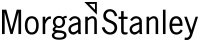
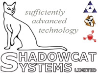
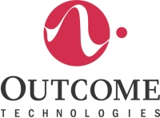
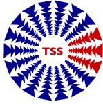
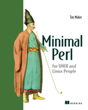

| "The Accessibility Of Perl"Jump to Content (Alt + C) | 30th August - 1st September 2006 | Home | News | Mailing List |

• Newsletters
• Wiki
• Call for Papers
• Schedule
• Talks
• Lightning Talks
• Statistics
• Organisers
• Sponsors
• Venue
• Accommodation
• Conference Map
• About Birmingham
• Travel
• Sights & Sites
• Birmingham
OpenGuide
• Birmingham
Perl Mongers

• TPF
• YEF
• YAPC
• Perl Mongers
YAPCs
• YAPC::Asia
• YAPC::Brasil
• YAPC::NA
• YAPC::Europe
• YAPC::Australia
Workshops
• YEF Worshops
• German
• Dutch
• Austrian
• Nordic
• Italian


The organisers would like to thank the following list of sponsors, who are all helping us to achieve our goal of hosting the 2006 YAPC::Europe Perl conference.
If you or your company would like to known more about how you can donate, sponsor and/or support the organisation of the conference in anyway, please see our Sponsoring & Support page for more details.
Platinum Sponsors
- Morgan Stanley (room sponsor)
Morgan Stanley is a global financial services firm offering a complete range of sophisticated financial services to a large and diversified group of clients and customers, including sovereign governments, corporations, institutions and individuals throughout the world. With a unique balance between institutional and retail capabilities, Morgan Stanley maintains leading market positions in its three primary businesses - securities, investment management and credit services.
- Systems Mechanics Ltd (meal sponsor)
Systems Mechanics are specialists in the field of Telecommunications Network and Service Management. Our professional services and development skills, coupled with our CrossTalkT product range, enable us to deliver "Best in Class" OSS and Network Management solutions to operators, service providers, and equipment suppliers. We provide a complete service to satisfy all our customer operational, business and technical needs-from initial concept through all stages of delivery to operational deployment.
Our success is based on our expertise in OSS, gained through close relationships with leading telecommunication companies, and our operator-centric solutions based on our CrossTalkT Perl Automation Framework and CrossTalkT Mapper Engine, which allow operators to tune and enhance OSS solutions - and contribute to fault correlation scenarios - all without any interruption of service.
Gold Sponsors
- Shadowcat Systems Limited (room sponsor)
Shadowcat Systems is a developer, sponsor of, and contributor to open source software projects including Catalyst, the elegant web framework, and DBIx::Class, an object-orientated database abstraction library. Shadowcat provides consultancy, training and support for these projects; systems management and automation; the design and implementation of network architecture; the development of proprietary and open source custom web applications; and offers Perl refactoring and project crisis management.
Shadowcat Systems are based in the United Kingdom but we deliver solutions to a global community of clients via onsite supervision along with traditional and internet based communications.
- Outcome Technologies (wireless network sponsor)
Outcome Technologies uses perl and other open source products to write innovative software in the healthcare industry. The open source communities, and in particular the perl community, provide far better quality support - and provide it faster too - than many commercial software support contracts, which makes open source ideal for a company like Outcome that is solving new difficult problems in a competitive industry.
Silver Sponsors
- Google (speaker sponsor)
Google is a global technology leader focused on improving the way people connect with information. Google's innovations in web search and advertising have made its website a top Internet destination and its brand one of the most recognized in the world. Google maintains the world's largest online index of websites and other content, and Google makes this information freely available to anyone with an Internet connection. Google's automated search technology helps people obtain nearly instant access to relevant information from its vast online index. For more information, visit www.google.com.
- Shopzilla (organiser's tshirt sponsor)
Shopzilla, formerly BizRate.com, is the world's largest shopping search engines. With an index of over 35 million products from more than 75,000 stores, gathered, organised and presented using leading-edge technology, Shopzilla provides consumers with the best way to find virtually anything for sale, anywhere, and at the best price. In addition to our flagship sites in the UK, France, Germany and US, Shopzilla also powers shopping search for many of the Web's largest consumer sites including AOL and Lycos. Many of our systems are written in Perl; Shopzilla actively supports the Perl community.
- Booking.com (refreshments sponsor)
BOOKING.COM, headquartered in Amsterdam, was founded in 1997 and has swiftly grown to become one of Europe's leading online hotel reservation companies, with 9 offices in 8 countries.
BOOKING.COM offers more than 25,000 hotels in over 6,000 destinations world wide. Customers can book a hotel from a wide range of properties, whether seeking a small family hotel or five star luxury. Because the site has simple search facilities, customers can easily find the right hotel.
BOOKING.COM (www. booking.com) is available in 12 languages and it has offices in Amsterdam, Barcelona, Berlin, Paris, Pisa, Loulé (Portugal), Rome, Vienna and Norwalk (USA).
- Belfast Perl Mongers (conference cd sponsor)
Belfast Perl Mongers are small but dedicated group of Perl Mongers, who have very graciously offered help and advice as previous organisers. Attending our planning meetings, providing ideas and most importantly helping us to keep our online payment processing available for registration.
Media Sponsors
- UKFSN (broadband sponsor)
UK Free Software Network is a UK ISP offering a range of services including ADSL, Dialup, Hosting, Email, Domain Registration and consulting services.
UKFSN exists primarily to support the UK Free Software communities and all profits go to fund UK Free Software projects (and we're looking for people who want sponsorship!).
Having provided the Internet connection for YAPC 2004 in Belfast UKFSN is proud to be able to do so again for YAPC 2006 in Birmingham and wonders which UK city beginning with B will host the next YAPC in the UK
- AnServe (sponsor donation)
Just a divert away. Anserve will answer your incoming business calls promptly and courteously. Your callers may never be aware that they are not speaking to your office. Our service is flexible and cost effective, freeing you and your staff to concentrate on other opportunities. No long term contract and no hidden charges. We will relay messages to you via fax, email, sms, pager or voice mail. We act as your receptionist and greet customers in your company name. We can tailor a script to meet your specific requirements and are available 24x7x365. (we can even access your website!)
- Target Support Solutions (TSS) Ltd (sponsor donation)
Target Support Solutions (TSS) Ltd, providing quality system administration resources for blue chip clients in the banking, insurance, utilities, and public sector since 1998. Specialists in Unix System Administration, we also provide troubleshooting on a no fix no fee basis, and per-incident technical support.
- Jon Allen (conference cd sponsor)
JJ is a member of Birmingham Perl Mongers, photographer, and telecoms geek. He developed and maintains the Perl documentation website http://perldoc.perl.org. For book reviews, talk slides, and details of JJ's other projects, including pod2pdf and XLSperl, please visit http://perl.jonallen.info.
- logicLAB (lanyards provider)
logicLAB is a micro-ISV located in Copenhagen/Denmark, specializing in e-commerce and business related software. Utilizing primarily Perl and other Open Source technologies.
- The Positive Internet Company Ltd. (host provider)
We at The Positive Internet Company host thousands of popular websites. We handle millions of e-mails with optional anti-virus and anti-spam services. Our servers are all hosted on our resilient high availability network. Using only Open Source software we offer shared, Java enabled Z hosting, popular dedicated Dolphin servers and a renowned range of Fully Managed Servers. We provide a level of human support that is as expert as it is refreshing.
- UKUUG - the UK's Unix and Open Systems User Group (media promoter)
UKUUG - the UK's Unix and Open Systems User Group - is a non-profit organization and technical forum for the advocacy of open systems, particularly Unix and Unix-like operating systems, the promotion of free and open-source software, and the advancement of open programming standards and networking protocols. It uniquely caters for the needs of people in this area. Formed in 1976, it is totally funded by membership subscriptions and is completely independent of specific hardware and software vendors. All profits are used to further the activities of the organization.
- Sendit.com (auction donations)
Sendit.com (formerly known as BlackStar.co.uk) is one of the UK's biggest and longest established online retailers selling DVDs, games, and electronics to over 150 countries worldwide. Our bespoke software solutions, mostly written in Perl, are used by every part of the business - including Stock Management systems, Accounts, CRM, email handling and Customer Care. We sponsored the first ever YAPC::Europe and are happy to continue our support of the Perl community.
- Apress (auction donations)

Apress® is a publishing company established by computer professionals, programmers, and enthusiasts just like you. Apress books are tools that will help you learn new subjects, solve problems effectively, and save time. Practical, instructional, and thought-provoking, Apress books offer the highest quality content, distinctively written with The Expert's Voice™.
- O'Reilly Media (auction donations)
O'Reilly Media spreads the knowledge of innovators through its books, online services, magazine, and conferences. Since 1978, O'Reilly has been a chronicler and catalyst of leading-edge development, homing in on the technology trends that really matter and spurring their adoption by amplifying "faint signals" from the alpha geeks who are creating the future. An active participant in the technology community, the company has a long history of advocacy, meme-making, and evangelism.
- Manning (auction donations)
Manning is an independent publisher headquartered in Greenwich, CT, that specializes in publishing computer and technical books for professionals --programmers, developers, system administrators, designers, architects, business managers and others. Since 1994, Manning has built its reputation as a publisher of the highest quality technical books and attracts leading technologists and computer scientists to its ranks of authors.
Platinum Sponsors


Gold Sponsors


Silver Sponsors


Media Sponsors